Страх
и
ненависть
в распределенных системах
Гребенников Роман / Findify.io / @public_void_grv
© jpoint 2016
Обо мне
twitter: public_void_grv email: grv@dfdx.me

Intro
A distributed system is one in which the failure of a computer you didn't even know existed can render your own computer unusable.
Leslie Lamport, 1987
Intro
- (серверное) приложение
- внутреннее состояние
- перестало помещаться в один сервер?
Куда расти?
- сервер помощнее
- оптимизация
- распределенная система
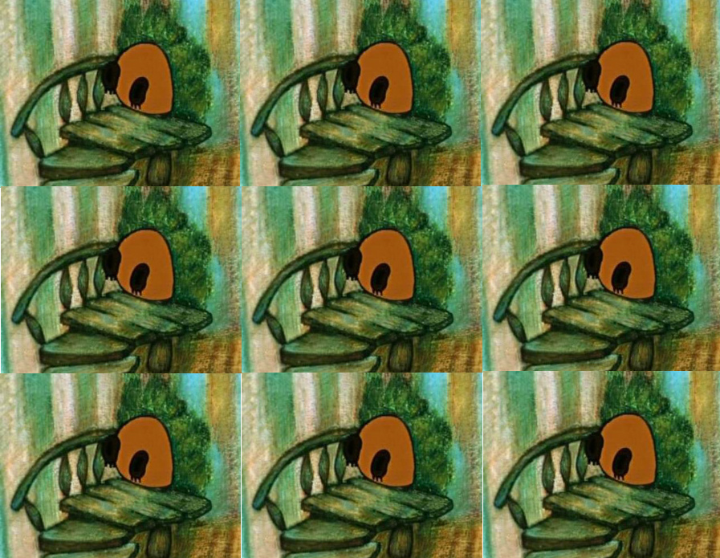
Агенда
- распределенные системы повсюду
-
как прострелить ногу: теория
- консистентность
- подходы к проектированию
- инструменты
-
как прострелить ногу: практика
- Распределенная "БД" на 100 строк
- шатание и ломание
- как с этим жить
Они повсюду
Серверы:
- Железные или в облаке
- Общаются по быстрой локальной сети
- Или через океан
Они повсюду
Клиенты:
- Мобильные приложения или браузеры
- Общаются через отвратительный 3G
- Или через голубиную почту
Они обобщенно повсюду
Распределенная система[1]:
- состоит из нескольких частей,
- части общаются друг с другом,
- медленно и с ошибками
[1]: Aphyr / K.Kingsbury: Distributed systems lecture series, 2016
Пример из жизни
Веб-скрейпер, с общей очередью задач.
- взять из очереди
- положить в очередь
- проверить, есть ли обьект в очереди
Очередь целиком не помещается в RAM.
Пример: шардинг
Разбить всю очередь на блоки
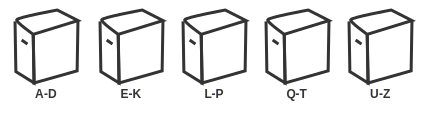- Каждый сервер работает в рамках своего блока
- взять из очереди = ок*
- положить в очередь = ок*
- проверить, есть ли в очереди = ок*
* - #тяжеловато
Problems, officer?
Больше компонентов = меньше надежность системы
Что-то обязательно поломается: софт, железо, сеть.
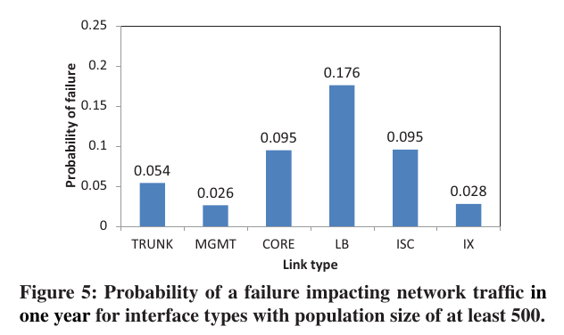[1][2] [1]: P.Gill, Understanding network failures in data centers: measures, analysis and implications [2]: Aphyr / K.Kingsbury: The network is reliable, 2013
Netsplit
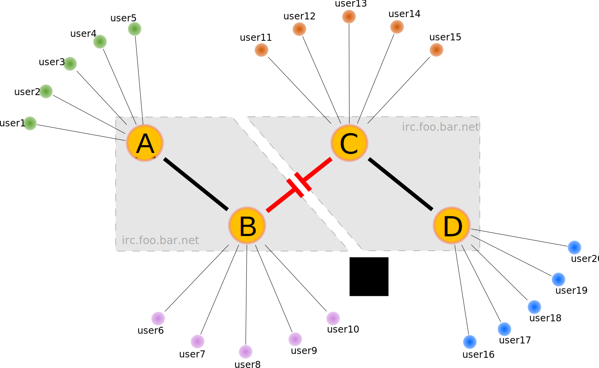Netsplit и шардинг
- взять из очереди = fail
- проверить, есть ли в очереди = fail
- положить в очередь = data loss
Не заложили отказы в дизайн системы
CAP-теорема
 [1]
[1]
Три стула: выбирай любые два*
[1]: E.Brewer, CAP twelve years later: How the "rules" have changed.
CAP: Availability
-
Постоянная доступность:
- Каждый запрос к системе
- К любому живому узлу
- Должен быть успешно обработан
- Часть запросов откладывается на потом ☹
- Не все живые узлы отвечают на запросы ☹
- 500 internal server error ☹
Целостность
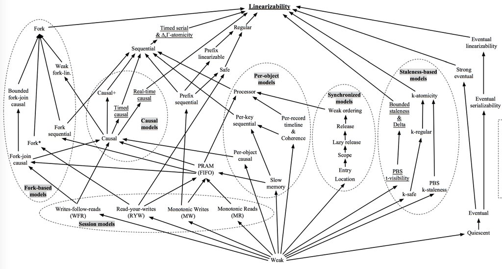[1]
[1]: P.Viotti: Consistency in Non-Transactional Distributed Storage SystemsCAP: Consistency
- Если операция B началась после окончания операции А
- тогда В должна увидеть систему на момент окончания А
- или в более новом состоянии.
Существует непротиворечивая история последовательных операций.
Линеаризуемость
Регистр, один читатель-писатель:
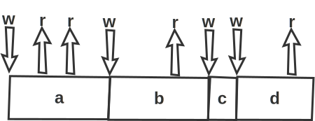
Несколько читателей и писателей:
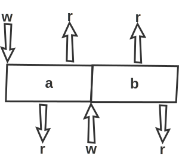
Линеаризуемость
Реальный мир с сетевыми задержками:
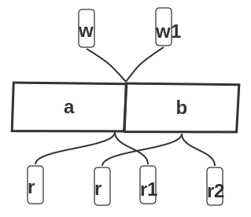- read a, write b, read b
- read a, read a, write b
- read a, read b, write b
CAP: Partition tolerance
устойчивость к сбоям сети
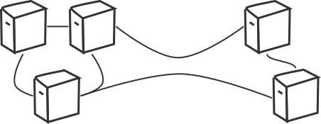
Настал netsplit: кластер развалился пополам. Что делать?
- Большая живет, меньшая лежит: теряем доступность
- Работают обе половинки: теряем целостность
CP / AP / AC
Проблема с АС:
- есть высокая доступность
- и гарантии целостности
- пока не поломалась сеть
CP / AP / AC
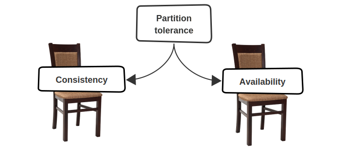В реальном мире можно выбирать CP или AP,
третьего не дано
CP / AP / AC в реальной жизни

- 2PC: двухвазный коммит
- Paxos: голосование с кворумом
- Gossip: peer-to-peer обмен
Live demo
План:
-
Master-slave распределенная система, Scala+Akka+Docker
- Async replication
- Sync replication
- Тестировать её при помощи Jepsen, не шатать
- Пытаться обьяснить результат
Master/slave
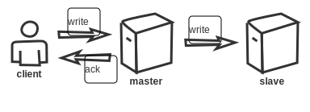- Клиент отправляет запрос на запись мастеру
- Мастер пишет на диск
- Мастер [а]синхронно реплицирует запись слейву
- Мастер отвечает клиенту об успешной записи
Async/sync replication == CA?
Docker

- Система контейнеризации приложений
- Использует Linux cgroups и namespaces (LXC, OpenVZ)
- Богатая экосистема: Compose, Machine, Swarm, Kubernetes
Jepsen: Call me maybe
- Фреймворк на Clojure для тестирования р/с[1]
- Набор готовых тестов для разных систем
- Серия разгромных статей о найденных проблемах[2]
[2]: K.Kingsbury, "Call me maybe" series
Jepsen: чтобы шатать
MongoDB, Aerospike, Cassandra, Kafka, MariaDB/Galera, Percona, RabbitMQ,
Redis, Riak, Zookeeper, etcd, Chronos, RethinkDB
- Имитация сетевых ошибок
- Генерация случайных последовательностей операций
- Оценка истроий применения операций с т.з. целостности
Jepsen + M/S
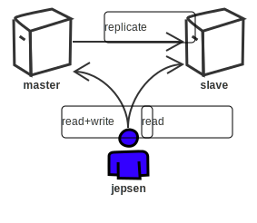
- Писать в мастер, читать с мастера/слейва
- Consistency = ?
- Availability = ?
Jepsen 101
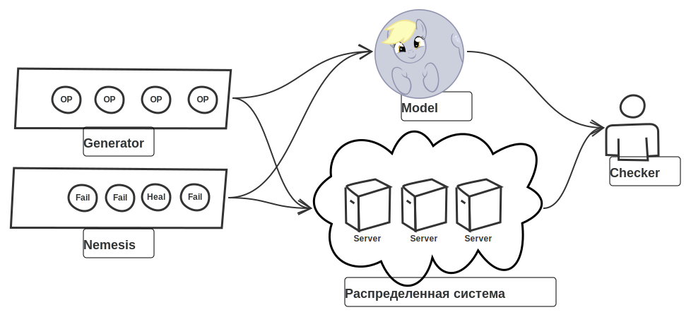
Clojure 101
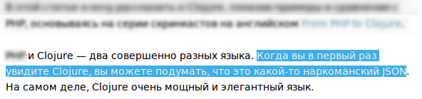
user=> (+ 1 2)
3
user=> (defn hello [name] (println "hello," name "!"))
#'user/hello
user=> (hello "jpoint")
hello, jpoint !
nil
user=>
Master/Slave Fail
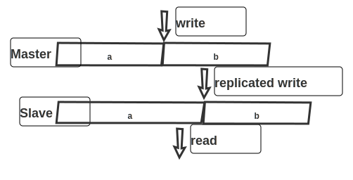- Мастер говорит ОК когда слейв не консистентен
- Слейв запаздывает за мастером
Что-то не так
|
написал код
|
запустил Jepsen
|
Master/slave fail #2
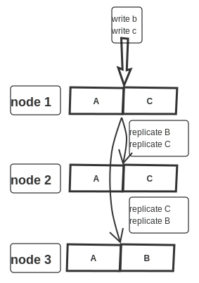Master/Slave vs CAP
| async | sync | |
| Consistency | неа | да* |
| Avaliability | неа | неа |
- Consistency: replication lag
- Availability: слейв не умеет писать, только читать!
Don't call me CAP
Теорема с очень строгими определениями[1]:
- описывает 1 регистр
- consistency: а что с транзакциями?
- availability: latency? дохлые диски? reboot?
- partitions: потеря пакетов?
Налайвкодили, а жить-то как?
Крафтовые распределенные системы:
- Содержат кривой-косой алгоритм консенсуса
- Никто не тестировал на целостность в экстремальных случаях
Консенсус
Соглашение об общем состоянии, восстановление от сбоев:
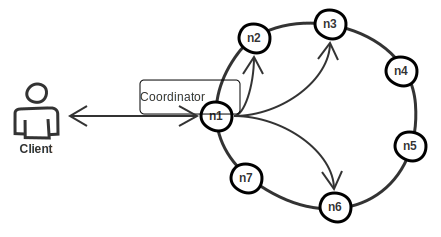- Minority fail: OK
- Majority fail: потеря доступности, сохранение целостности
Live demo strikes back
-
Распределенная система, Scala+Akka+Docker
- Кворум на коленке
- Шатать её при помощи Jepsen
- Пытаться обьяснить результат
def read =
Future.sequence(nodes.map(node => httpRead(node)))
.flatMap(handleQuorum)
.map(buildResponse)
def write(data: String) = {
Future.sequence(nodes.map(node => httpWrite(node, data)))
.flatMap(handleQuorum)
.map(buildResponse)
}
- A, линеаризуемо
- B, линеаризуемо
- A, не линеаризуемо
- B, не линеаризуемо
Paxos & Raft
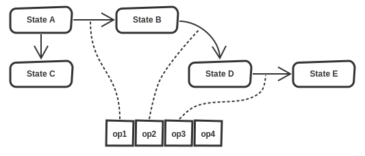- соглашение о порядке операций:
- Выбор мастера
- применение операции
- репликация журнала
- одинаковый журнал → одинаковое состояние
Paxos vs Raft
Paxos сложный:
- оригинальное описание: формальное и теоретическое
- монолитная система, не разбита на фазы
- для реализации надо многое додумать
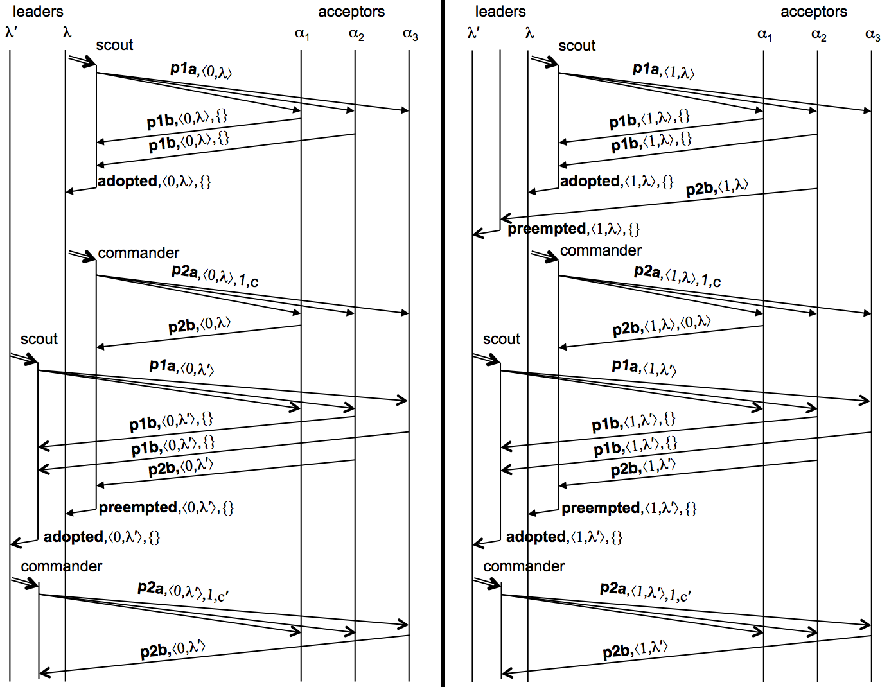
Raft [1]
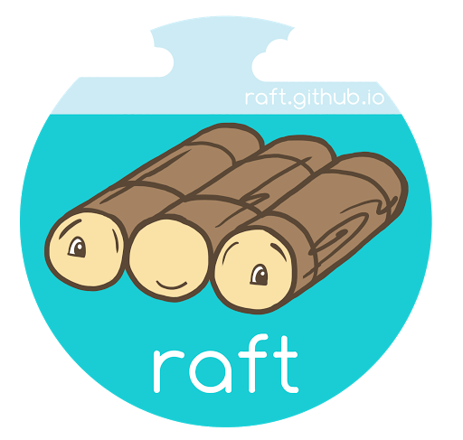
Учтены проблемы Paxos:
- Четкое разделение фаз и компонентов
- Явно выделенный лидер
- Практические аспекты реализации
Raft @ JVM
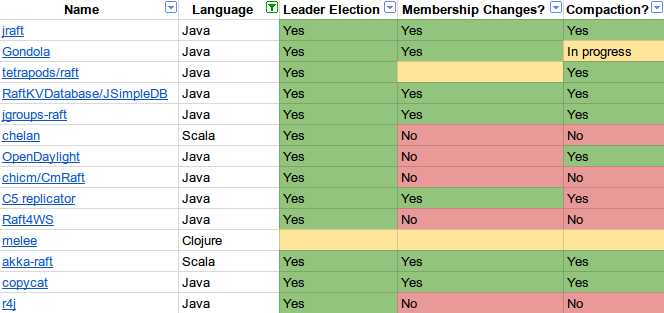Консенсус и реальная жизнь


Cheat sheet
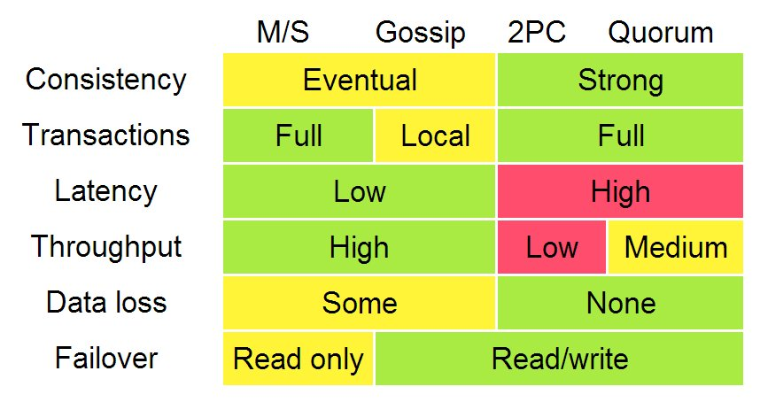[1]Личный опыт
- Наигрались в свои велосипеды: master-slave
- Наигрались в чужие велосипеды: akka-cluster
- Вынесли весь стейт в наружу
Теперь все иммутабельно и пахнет ёлочками.
Выводы
- Прострелить ногу просто
- Прежде чем изобретать велосипед, учите матчасть
- Почти все проблемы уже решены
Материалы
|
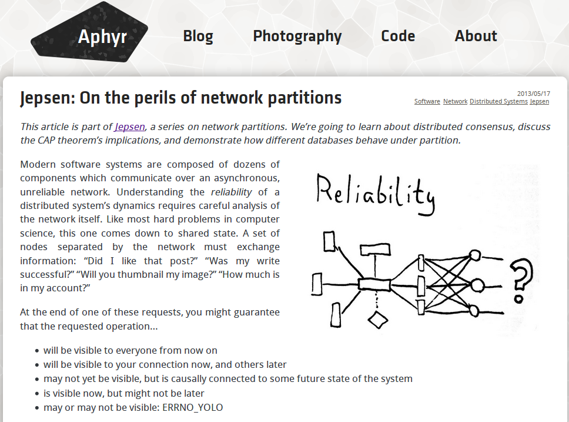 aphyr.com/blog |

M.Kleppmann: Designing |